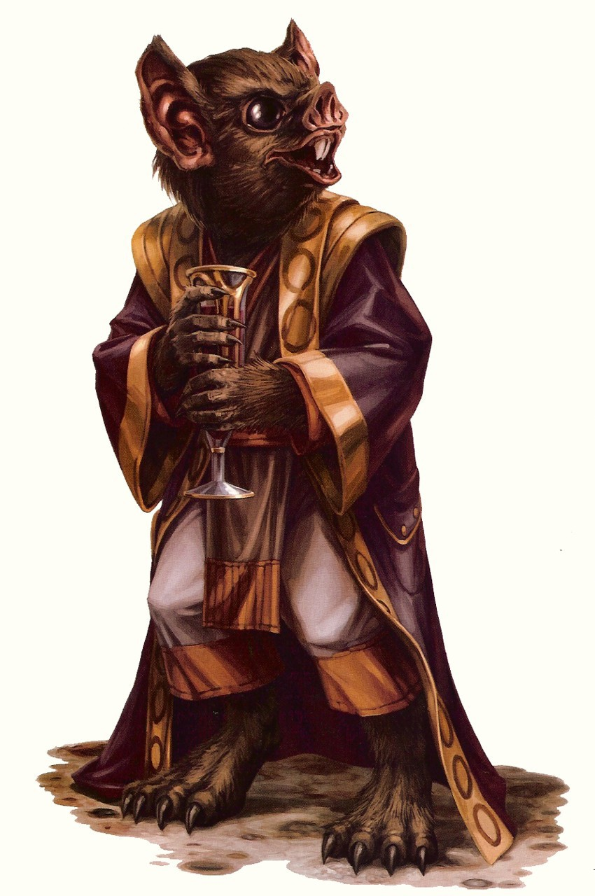

Chadra-Fan
chadra-fan
Special Abilities: Chadra-Fan are smaller than average and count as silhouette 0. Chadra-Fan begin the game with one rank in Mechanics. They still may not train Mechanics above rank 2 during character creation.
Acute Senses: Chadra-Fan hearing, vision, and olfactory senses are all far superior to most humanoids. They remove up to from their Perception checks.
There are few species in the galaxy as gregarious or as overwelmingly cheerful and talkative as the Chadra-Fan. The enthusiastic rodents have propagated throughout the galaxy as free traders or slaves, enjoying life in what they view as a series of exciting adventures. Though bereft of any formal training, most Chadra-Fan are accomplished mechanics, and fiddle with almost every device they encounter. As such, shopkeepers have a tendency to lock their display cases if a Chadra-Fan walks in.
Descended from small, mammalian tree-dwellers, the Chadra-Fan have retained a natural climbing ability. As a species, Chadra-Fan are small, rodent-faced humanoids covered in short, thick fur, ranging in color from a light tan to dark umber or black. Their faces have large black eyes, massive, bat-like ears, and four nostrils at the end of a short snout, which ends in buckteeth. Chadra-Fan sometimes wear long dresses and smocks over their furry bodies, though they are just as often seen wearing little more than a tool belt.
Chadra-Fan have sharp senses. Their vision extends into the infrared range, and their hearing likewise extends into much higher ranges than most humanoids. Their upper nostrils are chemoreceptive, enabling them to sample pheromones, which they can also exude. These scent markers are crucial in distinguishing males from females, and in Chadra-Fan courting rituals. Chadra-Fan metabolism is very high, and their sleep cycle is divided into brief, two-hour naps.
The overly social Chadra-Fan are friendly to a fault, and they have a tendency to latch on to almost everyone they meet. It is common to insult someone by saying they have a personality only a Chadra-Fan could love. However, while the Chadra-Fan enjoy the company of anyone and everyone, they don't do particularly well on their own. A number of Chadra-Fan have actually died of loneliness when forced to spend extended periods of time in solitude. Depression and other psychological maladies are common among those who have endured stretches of time without company.
On Chad, the Chadra-Fan live in small cyperill treetop dwellings connected by a series of makeshift bridges and platforms. Over the past few centuries, the planet has suffered several ocean floor groundquakes that created powerful tsunamis, including a gargantuan disaster a decade ago that wiped out most life on the planet. These giant waves have destroyed most Chadra-Fan attempts at urbanization, limiting them to the flexible cyperill trees. The tsunamis have also created an unnatural fear of drowning and water in general across the species.
The storms are so central to Chadra-Fan life that many still follow a religion organized around a deity thought to live at the bottom of the ocean. This deity controls the entire ocean, and when the Chadra-Fan upset Him, He fans His tail violently and creates a tsunami. The religion is ancient, and though only a small percentage are devote, most every Chadra-Fan is aware of it.
Due to these frequent disasters, the Chadra-Fan often find themselves picking up and rebuilding elsewhere. As a result, the concepts of personal space and private property are foreign to them, and Chadra-Fan infamously tinker with strangers' technological items without asking permission. This irresistible compulsion often gets them into trouble.
Demand for Chadra-Fan scratch-built technology is growing, thanks to a recent movement that treats the gadgets like masterful sculptures. These gizmos are cobbled together from spare parts and common items and components adapted for unexpected uses, with a Chadra-Fan kit-basher's design aesthetic. Custom-built devices often go for top credit in silent auctions, thanks to a number of major corporate representatives with an eye for patent chasing added to the bidding wars. Chadra-Fan are popular in engineering think-tanks because of their unorthodox approach to cannibalizing existing technology and re-purposing it as something unexpected.
Also known as Chad III and Chadra, Chad is a sparsely populated water world located just off the Perlemian Trade Route in the Outer Rim's Jospro sector. Chad has an eccentric orbit that makes it alternately the third or fourth planet in the Chad system. Chad has nine moons, which contribute to a complex tide system that can create massive tsunamis with only the slightest influence from semi-regular groundquakes. The Chadra-Fan live in treetop cities among the cyperill bayous, while human colonists live onboard massive rancher-arks.
Chad is an agriworld, and one of the largest exporters of milk in the galaxy. The lactil is a docile, hoofed herd beast that generates a large quantity of milk despite the scarcity of grazing land. Chad is well-regarded throughout the galaxy fortheir cheese and gourmet caf creamer. Despite the popularity of their dairy products, the bulk of Chad's agricultural exports are water-based.
Chadra-Fan farm wander-kelp and slugs in paddies, most of which are exported as feed for herd animals, though the wander-kelp also has medicinal properties with applications across the galaxy. The bravest Chadra-Fan and human colonists live in large ocean platforms or mobile arks, where they live as ranchers, raising the massive, corvette-sized bildogs and docile sea cows. Most of these ranches have a remote-controlled buoy system that emits a shock if a branded creature swims too close. Ranchers often tend their herd from the back of a cy'een, tsaelke, or methnap, three very similar, long-necked amphibians known for their grace in the water and melodic calls.
The Chadra-Fan have a native language of high-pitched chitters and squeaks that reach into the ultra-sonic range. Due to the limits of most humanoid hearing and vocal chords, Chadra-Fan not fluent in Basic often need an interpreter or protocol droid. However, most Chadra-Fan speak Basic, thanks to dozens of human colony arks floating on Chad's oceans. The Chadra-Fan language does not use a pause or silence to separate words or thoughts, and as a result, they tend to speak Basic very quickly, endlessly stringing words and sentences together without pause. Their Basic comes out high-pitched and squeaky, and can quickly grate on those with a preference for peace and quiet.
Chadra-Fan are renowned for their ability to manipulate and use technology, and often find positions in the Rebel Alliance as Aces or Engineers. However, their disarming, friendly nature and positive attitude means they also make great Diplomats and Spies. Their small size, desire to tinker, and upbeat demeanor cause most Rebels to find the Chadra-Fan as either endearing little siblings they never had, or annoying little thieves they wish they'd never met.
It had started as a calm day, the kind where the tsaelke dance over the water trawling for wander-kelp. Bafwizzy, the biggest and greenest of Chad's nine moons was over head, and bright even in the afternoon sky. Then the ocean just ran away. In the span of minutes, the ocean receded to expose kilometers of land.
Most of the Chadra-Fan raced to the newly exposed ground. A treasure trove of wrecked ships and containers that had been resting at the bottom of the ocean for centuries had just become easy to recover. Unfortunately, the Chadra-Fan didn't realize the receding tide was the result of a massive groundquake.
When the quake ended and the ocean returned, it took everyone by surprise. Almost a third of the planet's population was beyond the former shorelines when it hit, and were killed instantly. The crashing waves that followed wiped out cities and villages and killed many more. The survivors suffered months of starvation and disease. All told, it's been estimated that ninety percent of the world's Chadra-Fan died as a result of the tsunami.
The twenty million Chadra-Fan that remain on Chad all remember the disaster and friends and family they lost. On each anniversary of the day the wave hit, billions of candles, one for each lost loved one, are set afloat on the oceans in remembrance.